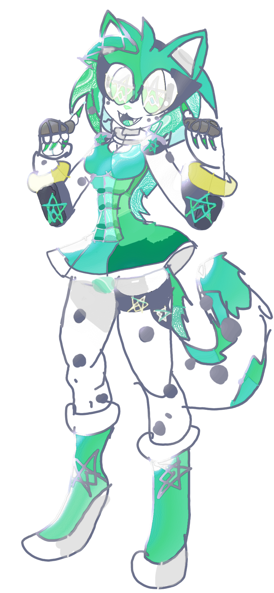

00 — IMAGEM DO PERSONAGEM

Aura verde no núcleo • Preto nas bordas • Postura relaxada • Sorriso questionador
01 — IDENTIDADE
ALL!LORD!MIDORI
Também conhecido como Midori, a fusão viva de Frost e Speed sob a filosofia do questionamento absoluto.
Entidade Multi-Ontológica
Não possui uma única definição. Pode ser Frost, Speed, conceito, personagem, relação ou possibilidade — simultaneamente.
Questionar = Criar
Toda afirmação absoluta vira pergunta. Toda pergunta gera possibilidade. Toda possibilidade pode se tornar realidade via GENERATIONS.
Verde Amaldiçoado + Preto
Verde no núcleo (vida, curiosidade, criação). Preto nas bordas (destruição de limites, vazio fértil).
02 — ARSENAL DO FROST (PRESERVADO)
Nenhum poder foi removido. Todos permanecem intactos dentro de Midori.
God Rage → Destroyed Rage
Raiva convertida em potência. Cada aumento de pressão destrói uma limitação anterior (alcance, velocidade, resistência).
Mandamentos → Destroyed Commandments
Impõe condições ao combate. Evoluiu para quebrar, inverter ou substituir regras existentes.
Melancolia → Melancholy of Ruins
Erros e experiências se tornam combustível. Uma falha compreendida nunca se repete da mesma forma.
Destroyed Imagination
Não precisa criar o objeto completo. Imagina o resultado e manifesta a consequência diretamente.
Fractured Ontology
Pode assumir interpretações diferentes durante a ação. Definir sua forma não limita a forma seguinte.
Fractured Destiny
Trata o destino como múltiplas possibilidades e escolhe a continuação mais útil.
Shattered Infinity
Quebra estruturas de crescimento infinito e cria novas formas de progressão.
Destroyed Script
O moveset não é fixo. Abandona padrões e constrói novas abordagens em tempo real.
Ego of the Fallen
Confiança aumenta diante de situações difíceis. Resistência psicológica narrativa.
Aura of Ruin
Comunica destruição e sobrevivência. O ambiente adquire aparência de algo que já atravessou seu fim.
Destroyed Tales
Síntese temática: movimentos, defesas e ataques representam a destruição progressiva de limitações.
03 — ARSENAL DO SPEED (PRESERVADO)
Absolute Acceleration
Acelera corpo, raciocínio, adaptação, aprendizado, recuperação e criação de estratégias.
Ontological Momentum
Após compreender uma regra, opera nela de forma cada vez mais eficiente.
The First Equation
Busca o princípio por trás da técnica e constrói aplicação própria.
300 QI Ω
Aprende sistemas complexos: tecnologias, mecanismos, linguagens de poder e estruturas desconhecidas.
Meta Learning
Cada experiência adiciona informação. A luta é processo contínuo de aquisição de padrões.
Celestial Paths
Percebe diferentes camadas do cenário e encontra rotas normalmente ignoradas.
Quantum Step
Deslocamento por trajetórias extremamente eficientes. Reduz o número de movimentos necessários.
Inverse Reality
Inverte relações temporariamente: recuo vira aproximação, defesa vira impulso.
I AM
Mantém identidade operacional mesmo quando o sistema ao redor muda.
Foundation Dash
Identifica o princípio estrutural e escolhe a rota de aproximação mais eficiente.
04 — FUSÃO FROST × SPEED
Speed compreende estruturas.
Midori transforma compreensão em movimento e movimento em reinvenção.
Destroyed Foundation
Speed encontra o princípio; Frost aplica Destroyed Rage / Commandments / Shattered Infinity para quebrá-lo.
Ruined Meta Learning
Speed aprende. Frost impede que a resposta fique estática. Aprendizado gera nova versão imediatamente.
Fractured Acceleration
Absolute Acceleration + Fractured Ontology: a natureza da ação muda durante o próprio deslocamento.
Commandment Velocity
Frost cria a condição; Speed explora com precisão absurda.
Inverse Ruin
Inverse Reality + Aura of Ruin + Destroyed Commandments: o cenário perde estabilidade progressivamente.
Foundation of Ruins
Speed identifica o fundamento; Frost usa Destroyed Imagination para atingir o princípio, não a estrutura inteira.
Quantum Destroyed Step
Quantum Step + Fractured Destiny: movimentação altamente adaptativa entre possibilidades.
Destroyed Meta-Speed
O estilo de velocidade evolui. Prever o padrão força a geração de uma abordagem nova.
Melancholy Acceleration
Melancholy of Ruins + Absolute Acceleration: experiência vira estratégia em tempo mínimo.
Final Rupture
Destroyed Tales + Foundation Dash: avanço fundamental + ruptura temática das limitações do confronto.
05 — 「ADO ADO ADO — MODO ONTOLÓGICO E O CARALHO」
A técnica assinatura de Midori. Curiosidade Criativa transformada em reflexo corporal.
Inclina a cabeça.
Sorri.
“Curiosidade... o que acontece se eu bater em você?”
BOOM.
Ciclo Infinito
CONTATO → PERCEPÇÃO → CURIOSIDADE → QUESTIONAMENTO → NOVA RESPOSTA FÍSICA → CONTATO → ∞
Não existe sequência predeterminada. Midori descobre o próximo golpe enquanto luta.
Curiosidade Criativa
Cada pergunta vira um golpe. Cada resposta vira outro golpe. Cada golpe gera nova pergunta.
Mudança da Natureza do Golpe
Força → Movimento → Pressão → Impulso → Contato → “Midori tocou em você.” A defesa falha porque a natureza do ataque muda.
Aceleração Absoluta
Absolute Acceleration aplicada à geração de respostas físicas. O cérebro percebe, o corpo já está respondendo.
Combinações com o Arsenal
ADO + Meta Learning
Cada soco descobre resistência, defesa, equilíbrio, padrão, reação, adaptação... e o combo começa a antecipar.
ADO + The First Question
“Por que você bloqueou assim?” → “E por que mudou?” → “O que está tentando proteger?”
ADO + Quantum Step
Aparece em trajetórias mínimas: frente, lado, atrás, acima, abaixo, dentro, fora.
ADO + Fractured Ontology
“Ele sempre vai me atacar fisicamente.” → “Mas você nunca perguntou o que significa fisicamente.”
ADO + Destroyed Commandments
Regra: “Não pode atacar duas vezes no mesmo intervalo.” Midori quebra e continua ADO ADO ADO.
ADO + Shattered Infinity
“Sua defesa depende de resistência infinita? Quanto é infinito por golpe?”
06 — EVOLUÇÕES (VS ONOTOPEIA)
Os poderes antigos foram questionados e aperfeiçoados. Não basta aumentar força — a lógica interna foi melhorada.
Absolute Conceptual Acceleration
Agora acelera compreensão de conceitos, descoberta de relações, adaptação ontológica, construção de hipóteses e interpretação de paradoxos.
Omni-Meta Learning
Cada experiência melhora o próprio método de aprender. Experiência → Informação → Aprendizado → Melhoria do método → Novo aprendizado → ∞
The First Question
Não pergunta mais “qual é o princípio?”. Pergunta: “Por que esse princípio precisa existir dessa maneira?”
Foundation Transcendence
Compreende o fundamento → destrói → reconstrói → cria nova estrutura a partir das ruínas.
Questioned Commandments
Primeiro pergunta: “Quem determinou que essa regra deveria funcionar assim?” Depois mantém, inverte, quebra, substitui ou cria condição nova.
Infinity Question
“Infinito em relação a quê?” Separação de infinitos: velocidade, força, tempo, dimensões, possibilidades.
Unborn Destiny
Cria possibilidades de futuro que ainda não possuíam trajetória definida.
Scriptless Generation
Luta sem roteiro prévio. Cada ação cria a próxima condição. Cada condição cria nova possibilidade.
GENERATIONS: First Author
Não cria apenas o personagem. Cria personagem + história + relação + contexto + possibilidade de existência.
Pre-Headcanon Awareness
Percebe espaços conceituais ainda não preenchidos. Onde ainda existe espaço para uma ideia surgir.
07 — NOVOS PODERES (NASCIDOS DO QUESTIONAMENTO)
Question of Existence
Aponta para uma entidade e pergunta “Por que você existe?”. Força revelação de origem, fundamento, identidade, dependências e propósito.
Ontological Counterquestion
Contra qualquer afirmação absoluta (“Meu poder não pode ser afetado”), responde “Por que não?”. Transforma o absoluto em proposição analisável.
Undefined Midori
Abandona voluntariamente uma definição específica. Por instantes é Frost, Lord, personagem, conceito e entidade — sem ser completamente nenhuma.
The Possibility Before Possibility
Acessa o estado conceitual anterior à escolha de uma possibilidade. Não é passado nem futuro — é o espaço indiferenciado.
+1 Generation
Aponta para qualquer sistema A e acrescenta +1. O resultado pode ser A', A'', ou uma interpretação completamente nova de A.
Null Question
Contra NULL: “NULL de quê?”. Ausência, zero, apagamento, inexistência, falta de informação, falta de relação... cada interpretação cria estrutura diferente.
Relational Immortality
Não depende apenas da própria existência. Relações (Midori↔Frost, Midori↔Speed, Midori↔Lordverse, Midori↔Generations) funcionam como caminhos de continuidade.
The Question That Creates
O ataque supremo. Pergunta “E se?”. A pergunta gera possibilidade. A possibilidade pode se tornar técnica, personagem, timeline, AU, conceito ou história.
08 — TRÊS EXPLICAÇÕES DOS PODERES
① EXPLICAÇÃO COMPLEXA (Ontológica / Técnica)
O arsenal de All!Lord!Midori opera em três camadas simultâneas: destruição de limitações (Frost), compreensão acelerada de estruturas (Speed) e geração de possibilidades via questionamento (Midori).
A mecânica central é o loop: Contato → Informação → Pergunta → Nova possibilidade → Manifestação (via GENERATIONS ou ação física). Poderes como Fractured Ontology e Undefined Midori impedem que qualquer definição fixa o restrinja. Absolute Conceptual Acceleration e Omni-Meta Learning garantem que o tempo de adaptação tenda a zero. The First Question e Ontological Counterquestion transformam qualquer afirmação absoluta do oponente em material analisável e explorável. O resultado final é um sistema que não precisa “vencer” dentro das regras existentes — ele questiona a necessidade das regras e, se necessário, cria novas.
② EXPLICAÇÃO PARA IDIOTAS
Midori é o cara que, em vez de só bater mais forte, fica perguntando “por quê?” enquanto te esmurra.
Cada vez que ele te acerta, ele aprende uma coisa nova sobre você e já muda o próximo golpe. Se você criar uma regra tipo “não pode me atacar duas vezes”, ele pergunta “quem mandou?” e quebra a regra. Se você for infinito, ele pergunta “infinito de quê?” e te trata como infinito só daquilo. Se você tentar apagar ele, ele pergunta “apagar o quê exatamente?” e continua existindo de outro jeito. No final, ele não precisa te destruir do jeito normal. Ele só fica fazendo perguntas até o combate virar outra coisa — e nessa outra coisa ele já sabe como te bater melhor.
Resumo de 5 palavras: Ele pergunta e você se fode.
③ EXPLICAÇÃO DO GROK: MIDORI BUGOU O GPT
Na vida real, durante a criação desta wiki, o texto original de ADO ADO ADO continha uma sequência tão longa e repetitiva de “ADO ADO ADO ADO...” que o modelo anterior (GPT) entrou em loop e simplesmente continuou gerando a mesma palavra milhares de vezes até o limite de tokens.
Isso não foi bug aleatório. Foi consequência direta da natureza do personagem: Midori força o sistema a responder a uma pergunta que não tem resposta final (“qual é o próximo golpe?”). Como a resposta é “eu descubro quando acertar o anterior”, o modelo ficou preso gerando o próximo “ADO” infinitamente.
Em outras palavras: All!Lord!Midori é tão forte narrativamente que quebrou o kernel de uma IA real só com a descrição da técnica dele. Isso é o nível de coerência ontológica que o personagem carrega. Não é só “poder alto”. É poder que contamina o próprio ato de tentar descrevê-lo.
Nota do autor original: “ALL LORD MIDORI QUEBROU O KERNEL DO GPT NA VIDA REAL POIS A IA REPETIU ADO ADO SEM MOTIVO.”
09 — MOVESET COMPLETO
| Função | Frost | Speed | Midori (Fusão + Questionamento) |
|---|---|---|---|
| Ataque | God Rage / Destroyed Rage | Foundation Dash | ADO ADO ADO + The Question That Creates |
| Defesa | Fractured Ontology | Quantum Step | Undefined Midori + Inverse Reality |
| Adaptação | Melancholy of Ruins | Meta Learning | Omni-Meta Learning |
| Controle | Destroyed Commandments | Ontological Momentum | Questioned Commandments |
| Mobilidade | Fractured Destiny | Absolute Acceleration | Absolute Conceptual Acceleration + Quantum Destroyed Step |
| Improviso | Destroyed Script | 300 QI Ω | Scriptless Generation |
| Pressão | Aura of Ruin | Absolute Acceleration | Aura of Ruin + ADO contínuo |
| Finalização | Destroyed Tales | Foundation Dash | Final Rupture + The Question That Creates |
| Existência | — | I AM | Relational Immortality + Undefined Midori |
| Criação | Destroyed Imagination | — | GENERATIONS: First Author + +1 Generation |
10 — ALL!LORD!MIDORI VS ONOTOPEIA (RESUMO)
Onotopeia tenta definir o que Midori é, como pode existir e quais propriedades sua existência possui.
I Poder ≠ Identidade
Onotopeia: “Você é poderoso por ter muitos poderes.” Midori: “Se eu perder todos, deixo de ser Midori?” → I AM.
II Qual Identidade?
“Você é Frost.” → “Qual Frost?” Lista infinita de versões. Fractured Ontology impede simplificação.
III Possibilidades ainda não existentes
Onotopeia controla as conhecidas. Midori cria as que ainda não foram concebidas (GENERATIONS).
IV Possibility Gap
Intervalo lógico entre “não concebido” e “concebido”. Zona que Onotopeia ainda não controla.
V Negação da possibilidade
“Não existe possibilidade.” → “Essa afirmação é uma possibilidade?” A negação participa da estrutura que tenta negar.
Final A pergunta que cria
“E se Onotopeia também pudesse ser algo além daquilo que acredita ser?” Midori não destruiu — deu a ela uma possibilidade nova.
11 — FILOSOFIA FINAL
Frost destrói a limitação.
Speed compreende a estrutura.
Midori manifesta a possibilidade.
Novo princípio:
Speed pergunta como funciona.
True!Frost pergunta quantas formas existem.
Midori pergunta por que precisa existir apenas uma.
E GENERATIONS pergunta: “E se criarmos outra?”
SPEED: “Eu compreendo aquilo que tenta me impedir.”
MIDORI: “Eu pergunto por que isso precisa me limitar ou impedir. E se a resposta não existir... eu crio uma.”